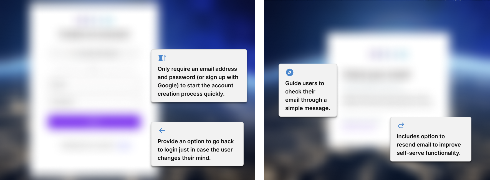
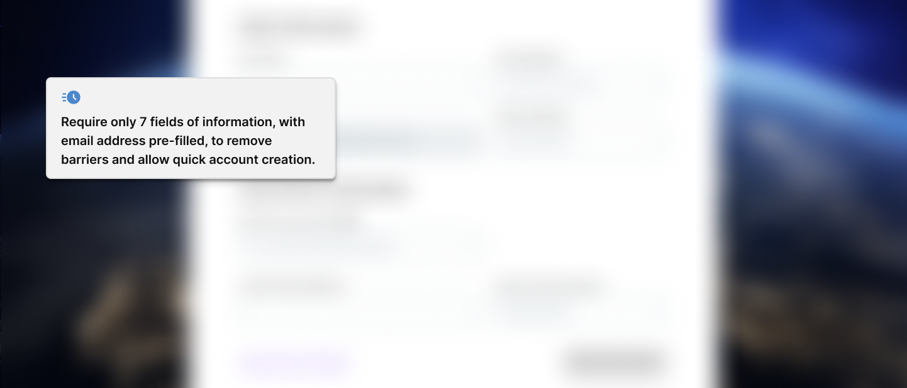
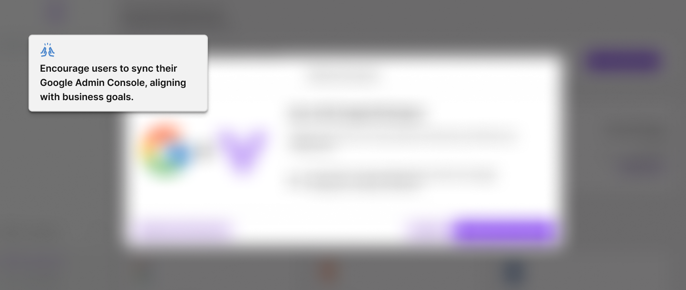
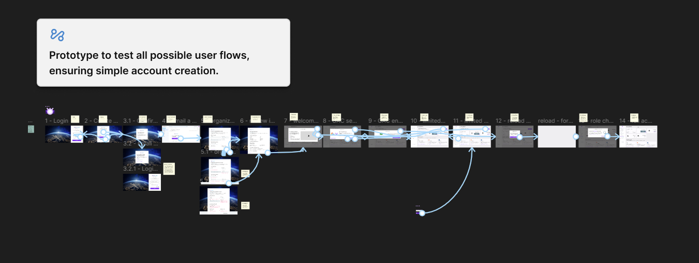

Self-Service Onboarding Design
Dream™ Asset Management is used by K–12 districts to manage Chromebooks, repairs, and inventory. For years, the only way to access Dream™ was through a manual onboarding process run entirely by company staff, meaning users could not sign up for the platform themselves. Since SaaS norms lean toward instant access and frictionless self-led demos, Dream™'s onboarding model became a barrier for new schools, curious prospects, and even internal teams.
To modernize the experience, I designed the onboarding flow to allow schools and users to self-serve. The new approach introduced three clear paths: joining an existing district, creating a new district account, or detecting an existing user. Each was designed to quickly guide people into the product without requiring sales or support intervention.
Context & Problem
Before self-signup, the onboarding process was entirely manual. A school needed to purchase Chromebooks or services before being given access. Someone at the company had to create the district’s account, invite users, and walk them through a demo. Even non-customers who were simply interested in Dream™ had to request a demo and wait for a representative to create an account for them. There was no way to try the product independently and without feeling like a commitment had to be made right away.
The biggest pain point was simple: users couldn’t self-serve. People expect to create accounts instantly, especially when evaluating software. Instead, Dream™ required a sales or support representative to intervene, slowing adoption and adding unnecessary friction to the very first step of the product experience.
To replace the manual process, we needed 3 separate onboarding flows becuase each situtation resulted in a different end-state:
- Join an existing school account
- If the user entered a school email domain already in Dream™, they were told the district existed and could request to join.
- The district admin would be notified, and meanwhile the user could view a demo.
- Create a new school account
- If the domain didn’t exist, the user could create a district account by entering required details (school name, admin name, phone, etc.).
- Handle existing users or invalid email domains
- If the email was already associated with an account, they were guided to sign in.
- If the email wasn’t associated with a K–12 school domain, they were informed that Dream™ was currently for K–12 only.
There were no risks of duplicates because the system checked the database before creating new accounts. If a school or user already existed, the interface clearly communicated what to do next. While this was a new process for Dream™, it aligned with familiar patterns in modern SaaS onboarding.
Goals
The primary goals were to:
- Speed up adoption by letting users onboard without waiting for a sales representative.
- Improve first-time experience and reduce friction.
- Increase user adoptionby guiding people directly into Dream™.
- Encourage Google Admin Console sync, which helps districts pull device data into the system.
While no specific KPIs were defined to my knowledge, the overall objective was clear: streamline onboarding so more schools and users enter the platform successfully, with fewer manual touchpoints from internal teams.
Design Process
Because this was a brand-new feature, I started by reviewing the user stories and researching onboarding patterns from well-known SaaS products. Most required very little to get started, often just an email and password, so I aimed for a similarly simple experience.
I collaborated closely with the software development team lead, who served as a bridge between leadership, engineering, and design. He helped clarify data requirements and technical constraints for each flow. When copy or tone decisions were needed, especially when telling users they couldn’t join, I partnered with Marketing to ensure the messaging felt supportive, not dismissive.
A key UX challenge: A UX disagreement between me and the lead developer arose when designing for a user who needed to join an existing district's account. I felt the user should verify their email first, then choose to request access. The lead developer preferred automatically sending the request once the email was verified.
I proposed a middle ground: the verification email button read “Verify & Request Access.” This preserved the developer’s logic while keeping the user informed and in control.
Two more UX challenges & decisions included:
1.. Handling invalid or existing emails
The challenge was communicating “you can’t join” without creating frustration. I relied on Marketing to refine this message so it remained friendly and helpful.
2. Creating a new school account
The priority was to get the user into Dream quickly while still collecting necessary details. I split the process into two steps:
- Step 1: Enter required information on one screen.
- Step 2: Review details and accept Terms of Service.
After the account was created, the user was immediately prompted to sync their Google Admin Console. This popup could be dismissed, but appeared front-and-center to encourage completion.
Visual Summary
Since these designs are not live in Dream™ yet, the details have been intentionally blurred for confidentiality. The main elements of the designs are described in callout boxes.
Tap or click the images below to view them full size in a new tab.




Outcome
The new self-signup flows have not been implemented yet, but they are designed to significantly streamline the first-time experience. By removing the dependency on sales and support to create accounts, Dream would likely see:
- More users entering the product
- Faster adoption by new districts
- Reduced manual work for internal teams
- A smoother and more modern onboarding experience
Since the feature hasn’t launched, no feedback has been gathered yet. If I were to iterate further, I’d focus on validating the flows with real users, especially the copy around domain restrictions and the decision points within the join-district path.